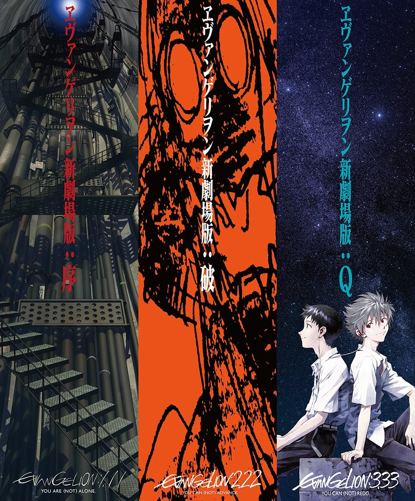
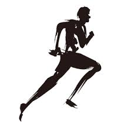

Suzuki Kisho
岩手県出身。システムエンジニアを目指す学生です。
私は開発において、「プログラムが正確に動作すること」は最低条件であると考えています。しかし、それ以上に大切にしているのは、「使う人にとって直感的で、ストレスのない体験を提供できているか」という視点です。
例えばチーム開発では、ユーザーが操作に迷わない導線設計や、リアルタイムなフィードバック機能など、「ユーザーとの対話」を感じさせる細かな心地よさにこだわってきました。
こうした「使う側の気持ち」に寄り添った設計は、システムへの信頼感に繋がると確信しています。今後も技術的な正確さと人間中心のデザインを両立させ、長く愛用されるプロダクトを生み出していきたいです。
Movie
Marathon
Karaoke
Off the Clock
リフレッシュの時間

映画鑑賞
映像美やストーリーから刺激を受けています。UI/UXのヒントをエンタメから得ることも多いです。

マラソン
一歩ずつ確実に進む忍耐力は、エラーと向き合う開発現場での大きな武器になっています。
カラオケ
声を出すことでリフレッシュし、集中力を高めます。友人とのコミュニケーションを楽しむ大切な時間です。